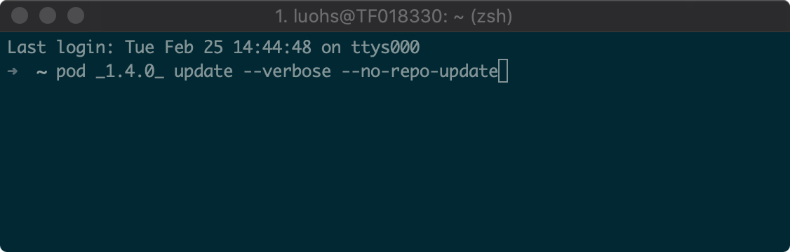
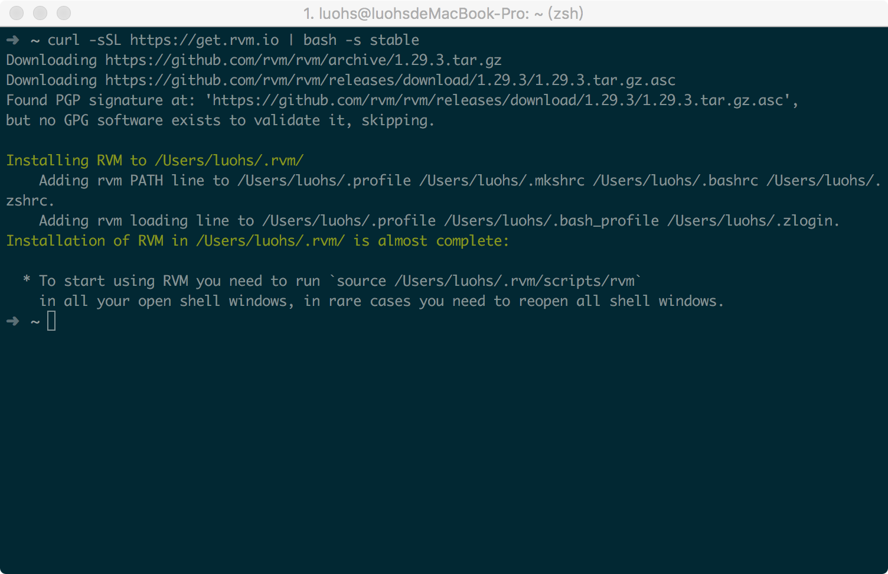
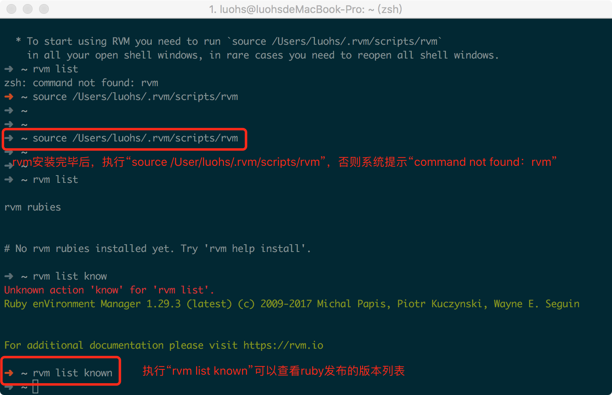
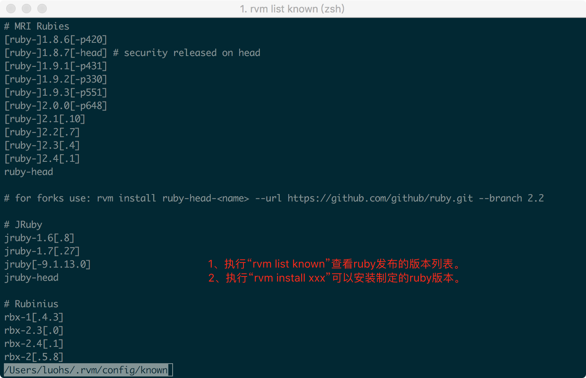
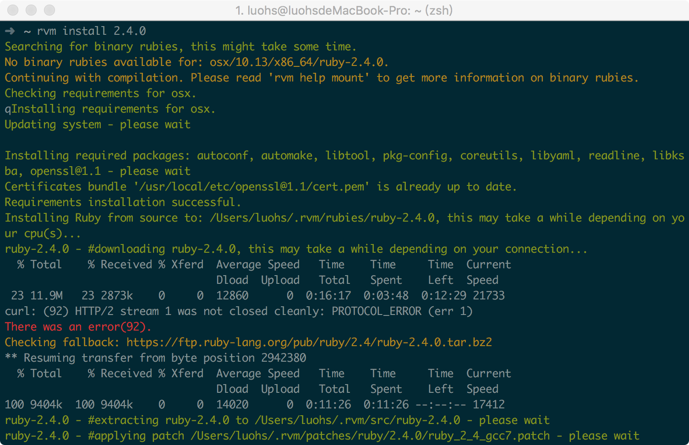
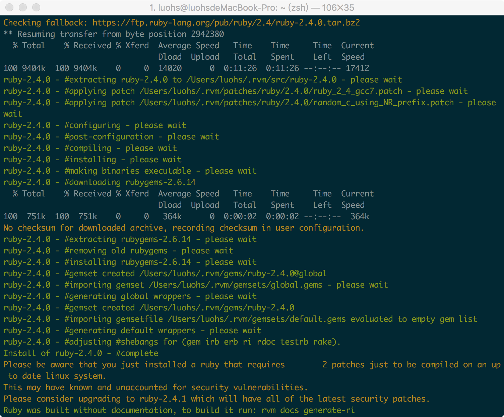
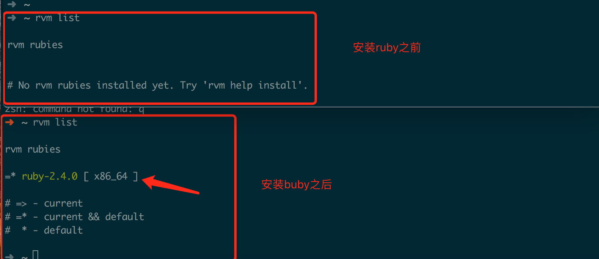
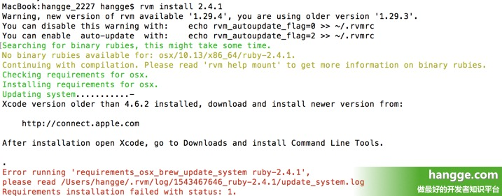
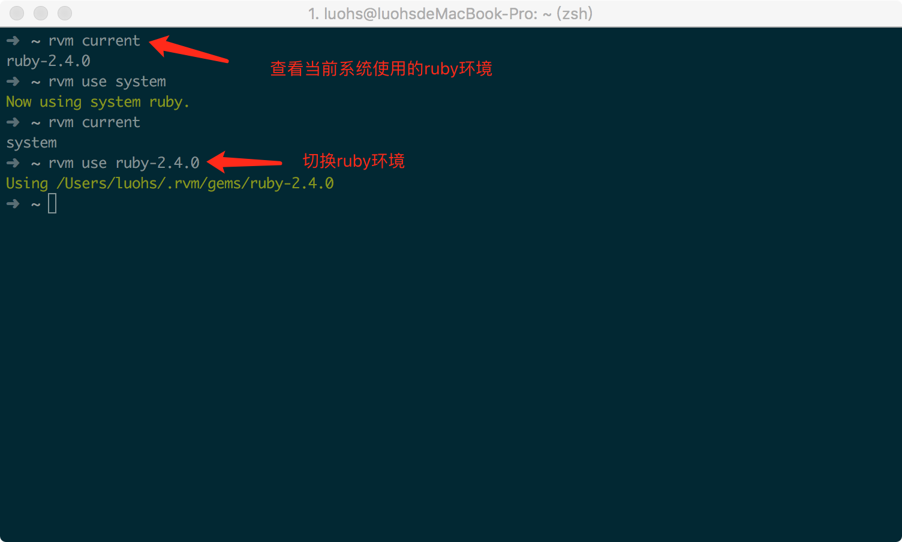

本来这本是不值得一提的事情，本地ruby环境早已经安装，MAC系统本身也自带了ruby环境。最近由于cocoapods 1.8.0版本支持了CDN，但是我又想继续使用我的cocoapods 1.4.0版本，虽然可以在同一个ruby环境下安装两个版本的 cocoapods，并且在使用上可以这样：

但是我偏要在不同的ruby环境下安装各自的cocoapods，于是 rvm 就发挥作用了， rvm 可以管理多个 ruby 环境。







解决方案：
1、首先执行如下命令升级 rvm
'rvm get master'
2、再次安装
'rvm install 2.4.1'
